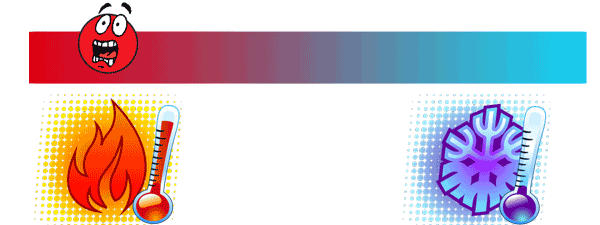

Temperatures in the world
Temperature is almost important in all the fields of Science starting right from Physics, Chemistry, Geology, Atmospheric Sciences, Biology, Medicine and as well in most aspects of our daily life.
The terms ‘Cold’ or ‘Hot’ are not scientific terms. If it is real to specify how much hot or cold something is, then we need to use the term Temperature. then Physically will measure it in temperature rather than mentioning hot or cold.
Hence, temperature can be defined as “The measure of warmth or the coldness of a substance or object with reference to some standard value " example temperature measure : C , F ..
our visualizing project display average temperature in the world ,also display average low and high in each year in continents in every countries .